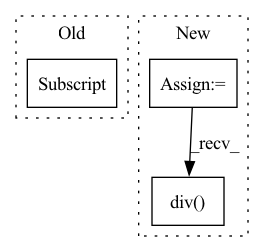

Pattern ID :20045
Before Change
print(df["y"].min())
print(df["y"].mean())
print(df["y"].max())
df["y"] = df["y"] .add(2 * df["y"].max()).div(3 * df["y"].max())
m = NeuralProphet(
n_changepoints=0,
// trend_reg=1,After Change
q = df["y"].quantile(0.9)
// w = max - min
w = q - min
shift = min - 0.125 * w
scale = 1.25 * w
df["y"] = df["y"].sub(shift).div( scale)
m = NeuralProphet(
n_changepoints=0,
// trend_reg=1,In pattern: SUPERPATTERN
Frequency: 3
Non-data size: 3
Instances Fragment ID: 65713688
Project Name: ourownstory/neural_prophet
Commit Name: 31384e7e32de4aa38ac319528ebacac026bb0746
Time: 2020-11-05
Author: ourownstory@users.noreply.github.com
File Name: tests/test_integration.py
M Class Name: IntegrationTests
N Class Name: IntegrationTests
M Method Name: test_air_data(1)
N Method Name: test_air_data(1)
M Parent Class: unittest.TestCase
N Parent Class: unittest.TestCase
M File Name: tests/test_integration.py
N File Name: tests/test_integration.py
M Start Line: 348
M End Line: 367
N Start Line: 348
N End Line: 357
Before Change
bright_regions = img.sum(1) > brightness_threshold * img.shape[1]
for ch in range(img.shape[1]):
gnch = generated_noise[:, ch]
gnch[bright_regions] = gnch[bright_regions] * -1
generated_noise[:, ch] = gnch
anom = (anom.int() + generated_noise).clamp(0, 255).byte()After Change
// invert noise if difference of malformed and original is less than threshold and inverted difference is higher
diff = ((anom.int() + generated_noise).clamp(0, 255) - anom.int())
diff = diff.reshape(anom.size(0), -1).sum(1).float().div(np.prod(anom.shape)).abs()
diffi = ((anom.int() - generated_noise).clamp(0, 255) - anom.int())
diffi = diffi.reshape(anom.size(0), -1).sum(1).float().div( np.prod(anom.shape)) .abs()
inv = [i for i, (d, di) in enumerate(zip(diff, diffi)) if d < invert_threshold and di > d]
generated_noise[inv] = -generated_noise[inv]
Fragment ID: 65713673
Project Name: liznerski/fcdd
Commit Name: d110aa8b141dc13f47156da913a6b4f9d64ddc74
Time: 2020-10-12
Author: p_liznersk13@cs.uni-kl.de
File Name: python/fcdd/datasets/online_superviser.py
M Class Name: OnlineSuperviser
N Class Name: OnlineSuperviser
M Method Name: __malformed_normal(8)
N Method Name: __malformed_normal(8)
M Parent Class: ImgGTTargetTransform
N Parent Class: ImgGTTargetTransform
M File Name: python/fcdd/datasets/online_superviser.py
N File Name: python/fcdd/datasets/online_superviser.py
M Start Line: 139
M End Line: 146
N Start Line: 143
N End Line: 151
Before Change
if "y" in df:
df["y_scaled"] = np.empty_like(df["y"])
not_na = df["y"].notna()
df.loc[not_na, "y_scaled"] = (df.loc[not_na,"y"].values - data_params.y_shift) / data_params.y_scale
return df
After Change
// not_na = df["y"].notna()
// df.loc[not_na, "y_scaled"] = (df.loc[not_na, "y"].values - data_params["y"].shift) / data_params["y"].scale
else:
df[name] = df[name].sub(data_params[name].shift)
df[name] = df[name].div( data_params[name].scale)
return df
def check_dataframe(df): Fragment ID: 65713695
Project Name: ourownstory/neural_prophet
Commit Name: 36d4ccf3da490fdc7f501683e8aae4d29f1c4ea4
Time: 2020-06-19
Author: oskar.triebe@merantix.com
File Name: neuralprophet/df_utils.py
M Class Name: AnonimousClass
N Class Name: AnonimousClass
M Method Name: normalize(2)
N Method Name: normalize(2)
M Parent Class:
N Parent Class:
M File Name: neuralprophet/df_utils.py
N File Name: neuralprophet/df_utils.py
M Start Line: 104
M End Line: 109
N Start Line: 71
N End Line: 85